Gives concrete accuracy numbers for choosing between system-level on-device intelligence (Gemini Nano via AI Core) and a custom fine-tuned tiny model when an app needs reliable function/tool calling offline
This traces how Function Gemma loads skills on demand and how synthetic-data fine-tuning lifted its app-intent success rate; the fine-tuning gains are specific to this team's 10-function set and may not generalize to larger or more ambiguous function sets (ours).
“it does uh, support over 2.7 billion devices, like lots and lots of daily invocations, and lots and lots of Android apps uh, leverage this”
said at 02:05“the model is aware of the types of skills it can use, but it doesn't have to see all of the functions and details of the skill”
said at 07:46“by default we enable about eight skills and it's able to choose between the eight skills reasonably well”
said at 18:05“That's um that works sometimes, right? And we're still like that's something we're still figuring out how to make that more robust, right?”
said at 18:37“this is a visual language model that's only 500 million parameters and this is optimized and running on like a um this is running on the Qualcomm NPU”
said at 12:23“if you go all the way back to a Pixel 7, they still can process almost 2,000 tokens per second prefill and 140 decode”
said at 13:25“when we took function Gemma out of the box, our success rate in that was I think 40 6% or something like that”
said at 14:27“that then got that 46% um to over like it was over 90% for eight of the 10 functions we were trying and two of the functions were a bit lower in their kind of ACs”
said at 14:58The 46%-to-90% jump is specific to this team's narrow app-intent function set, not a general claim about tiny-model reliability -- worth checking whether similar synthetic-data fine-tuning gains hold for tool-calling tasks with more than 10 functions or more ambiguous intents (ours).
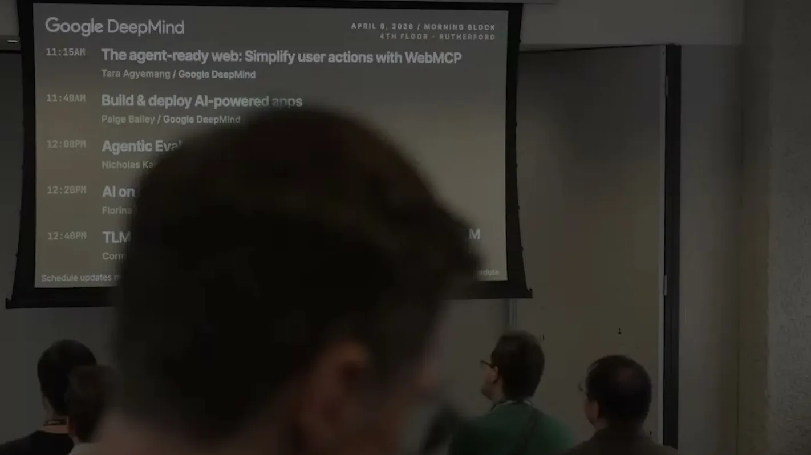
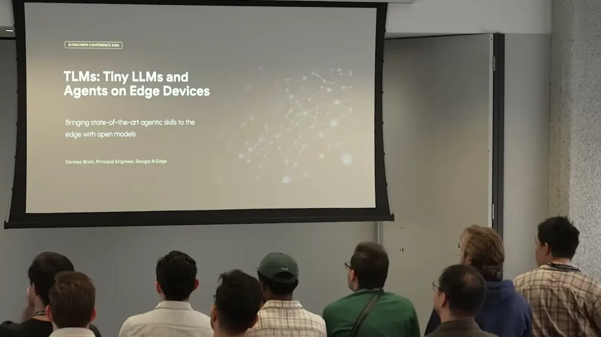
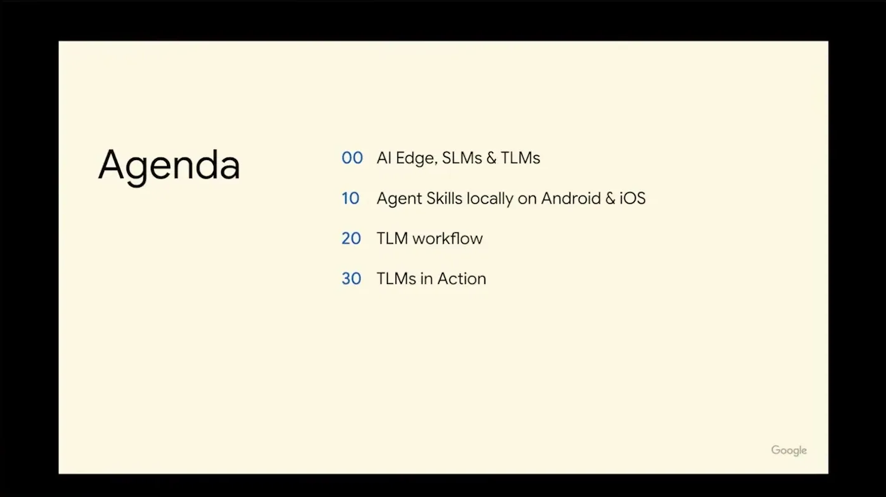
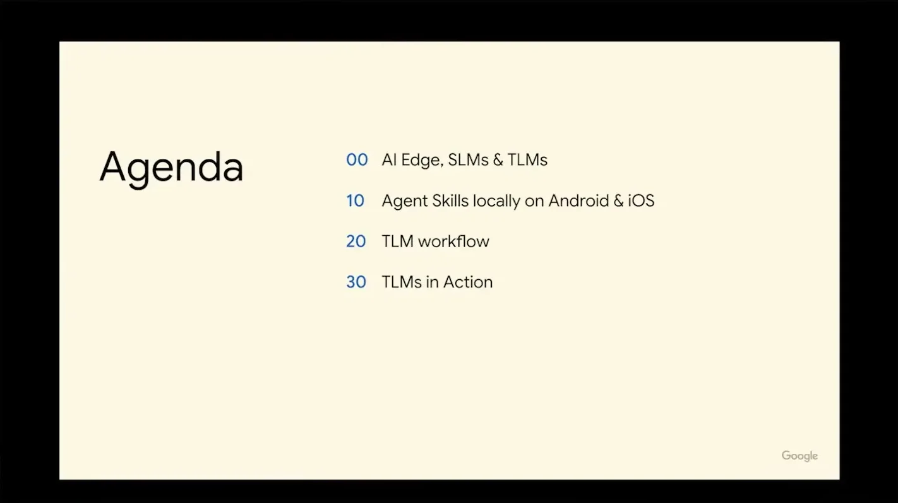
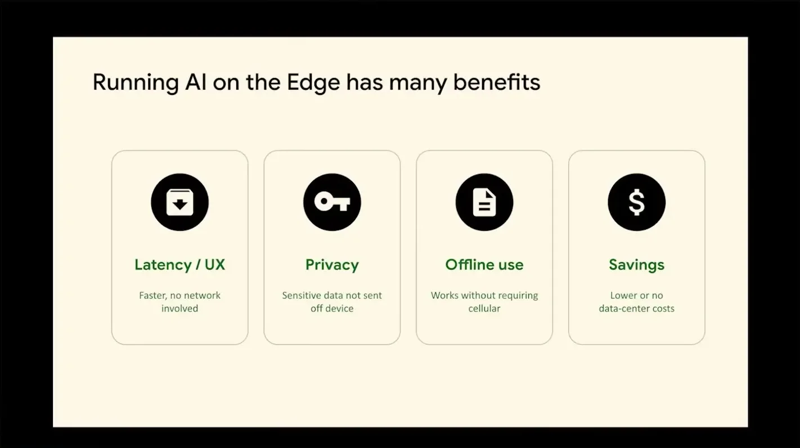
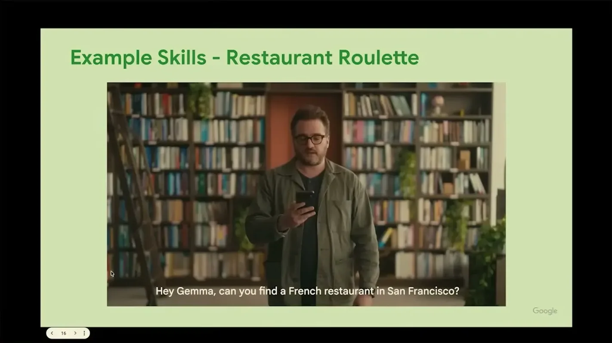
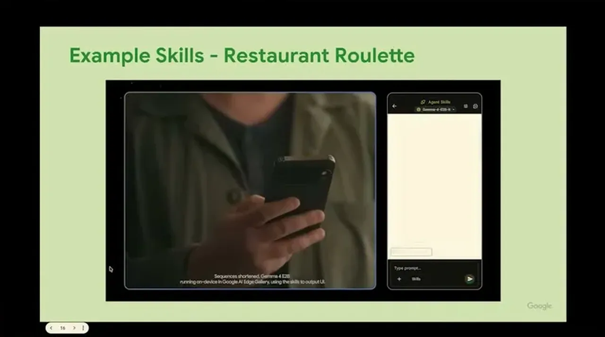
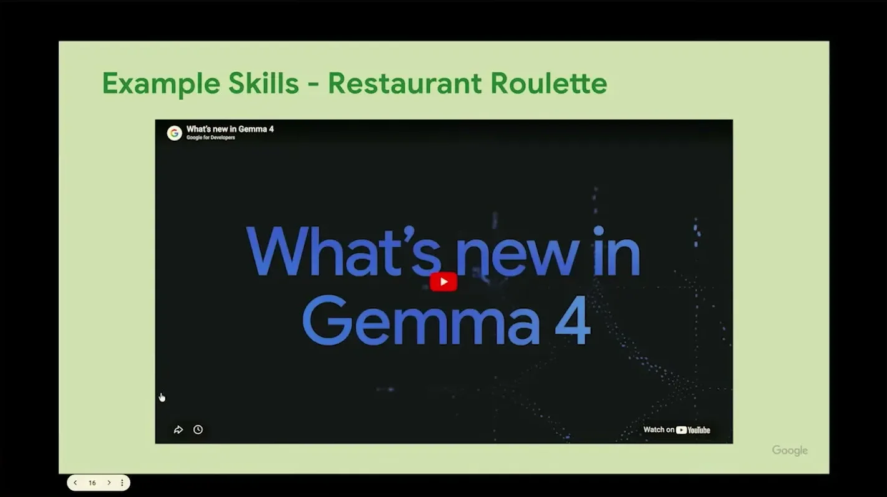
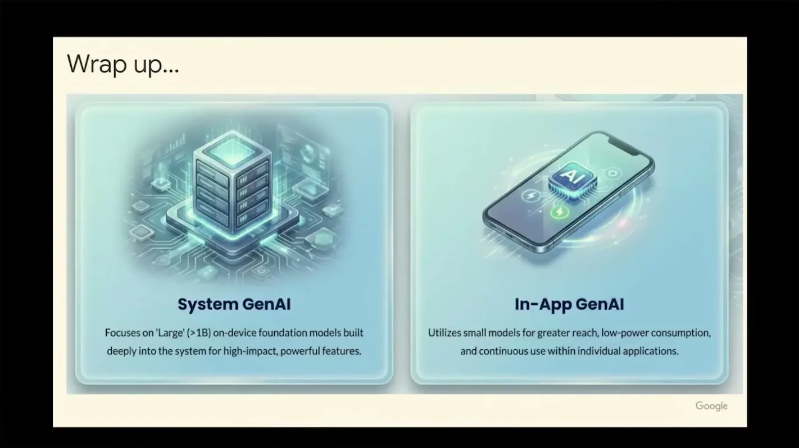
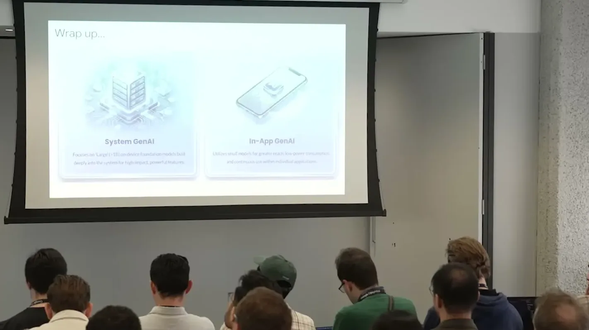
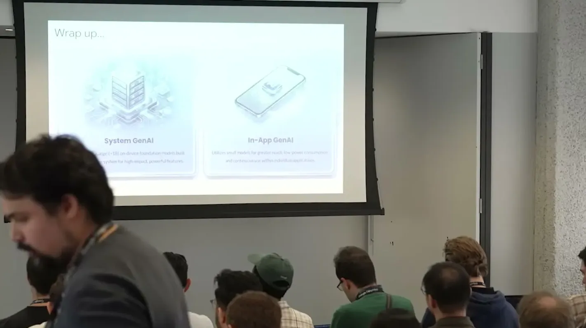
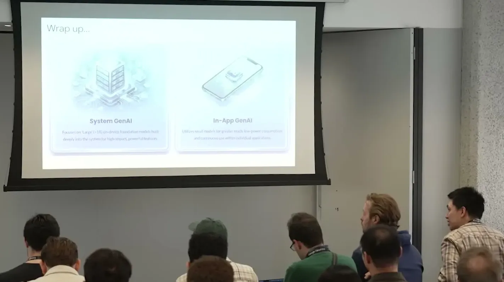
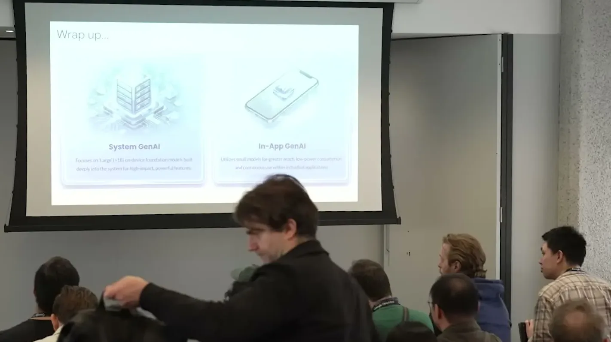
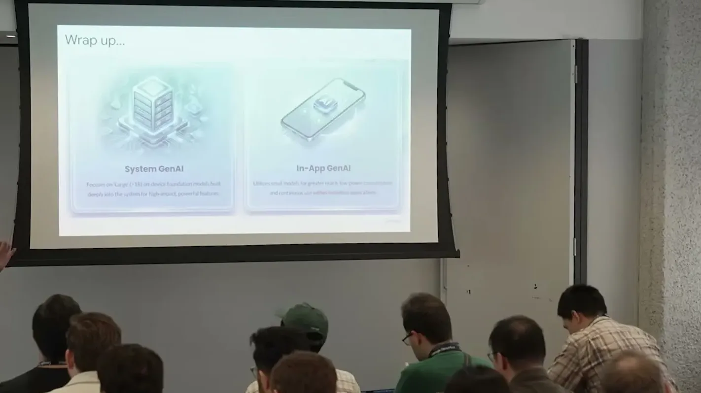
| Stance | Claim | t |
|---|---|---|
| asserts | Google's LiteRT on-device runtime is already built into Android OS and supports over 2.7 billion devices. | 02:05 |
| asserts | Function Gemma (270M params) is fast enough to hit almost 2,000 tokens/second prefill and 140 decode even on an older Pixel 7. | 13:25 |
| asserts | Function Gemma's out-of-the-box success rate on the team's app-intent functions was about 46%. | 14:27 |
| asserts | Fine-tuning Function Gemma on a synthetically generated data set raised success from 46% to over 90% for 8 of the 10 target functions. | 14:58 |
| asserts | The model is only told what skills exist via the prompt; full skill details and functions are loaded on demand via a load-skill tool call. | 07:46 |
| asserts | With about eight enabled skills, the on-device model chooses between them reasonably well across turns in a conversation. | 18:05 |
| warns | Getting the on-device model to reliably call multiple skills within a single answer (rather than across turns) is still an unsolved, only-sometimes-working problem. | 18:37 |
| asserts | Apple's FastVLM, a 500-million-parameter visual language model, runs optimized on a Qualcomm NPU through the same on-device stack. | 12:23 |
Machine-readable copy embedded in this page (script#ontology) and in the corpus ontology.